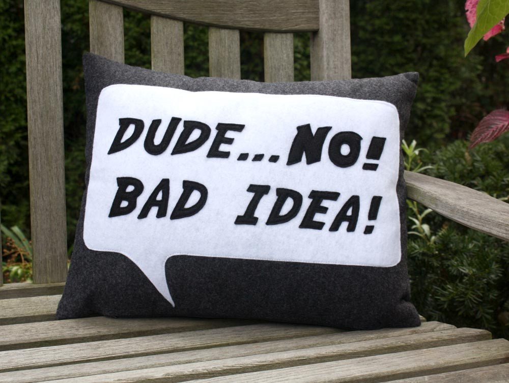

Classical Bad Idea

- Classical conditional connective
- Modus Ponens fails
- If ⟦φ⟧ = B and ⟦ψ⟧ = N
- Then ⟦φ → ψ⟧ = ⟦¬φ ∨
ψ⟧ = B ∨ N = T
- But ⟦φ⟧ (B) and ⟦φ →
ψ⟧ (T) are designated, ⟦ψ⟧
(N) is not
- Modus Ponens is required!
- The classical definition is a "Bad Idea"